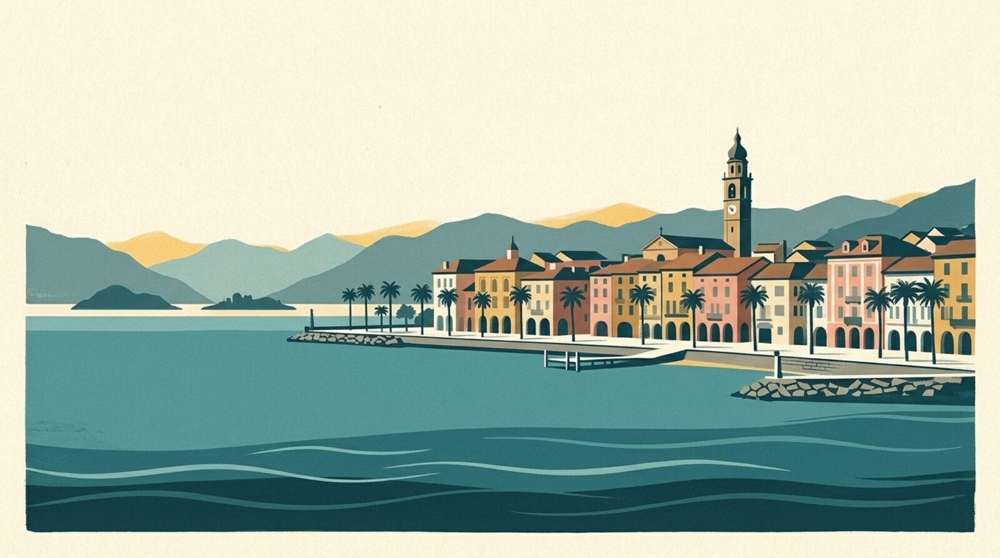
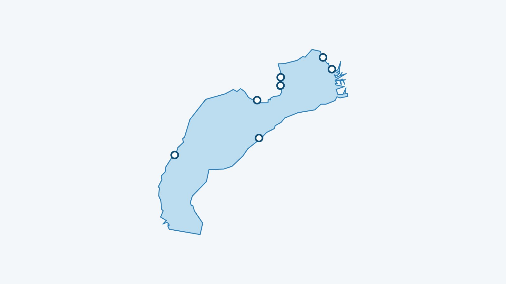

En bref
Mon Lac suit 7 plages du lac Majeur, avec la température de l’eau à 70 cm sous la surface quand elle est calculée. Voici la liste, puis les adresses utiles autour de l’eau.

Le lac Majeur couvre environ 212,5 km², descend jusqu’à 372 m et se trouve à 193 m d’altitude. Ses rives sont partagées entre la Suisse et l’Italie.
Les 7 plages suivies du lac Majeur
Entre parenthèses : la température du matin du 14 novembre 2026, à 70 cm sous la surface (modèle Alplakes).
- Brissago (15,4 °C)
- Ascona (15,4 °C)
- Gerra (Gambarogno) (15,4 °C)
- Lido Locarno (15,4 °C)
- Locarno – Bagno pubblico (15,4 °C)
- Tenero – Lido Mappo (15,4 °C)
- Tenero (15,4 °C)
Pour ce lac, l’eau est une seule valeur pour tout le lac : les plages affichent le même chiffre.
Entrée, saison et accès
Prix et dates relevés le 13 novembre 2026 sur les sources ci-dessous, pour la saison 2026 : à confirmer sur le site de chaque bain avant d’y aller.
- Lido Locarno : tarifs d’été 2026 : piscines à 13 francs pour un adulte, piscines et toboggans à 18 francs ; 7 francs pour les enfants de 3 à 15 ans (piscines), gratuit pour les moins de 3 ans. Les horaires changent au fil de la saison : voir le site du lido.
Un verre ou un repas au bord du lac Majeur
- Ristorante Lago Maggiore, Tenero : Via Lido 2, près du Lido de Tenero.
- Delta Beach Lounge, Ascona : Bâtiment de style Bauhaus récemment rénové : grande terrasse, vaste jardin et toit-terrasse avec vue sur le lac.
- Ristorante La Terrazza, Ascona : Sur le toit de l’hôtel Casa Berno.
- La Fontana Ristorante & Bar, Locarno : Grande terrasse entourée de palmiers et de végétation méditerranéenne.
- BLU Restaurant & Lounge, Locarno : Directement sur les quais de Locarno, dans une ambiance détendue.
Louer sur l’eau du lac Majeur
Chaque fiche renvoie au site du loueur quand il existe. Horaires et prix changent : à confirmer auprès de lui.
- Züllig Boats, Ascona, près de Ascona : Sur le quai d’Ascona : bateaux à moteur et pédalos de 4 personnes au plus.
- Wilson SUP Center, Locarno (de mai à septembre), près de Locarno – Bagno pubblico : Stand-up paddles à louer aux bains publics de Locarno et d’Ascona, de mai à septembre, avec des horaires qui varient selon la période.
- Watersports.ch, Tenero, près de Tenero – Lido Mappo : Au lido de Tenero : canoës et stand-up paddles à louer, sorties en bateau, wakeboard et banana boat.
- Tino Noleggio Barche, Muralto, près de Lido Locarno : Stand-up paddles, pédalos, bateaux à moteur et scooters nautiques à louer à Muralto, près de Locarno.
À lire aussi
L’eau du Léman en ce moment
La température de chaque plage est dans l’app Mon Lac, mise à jour toutes les trois heures.